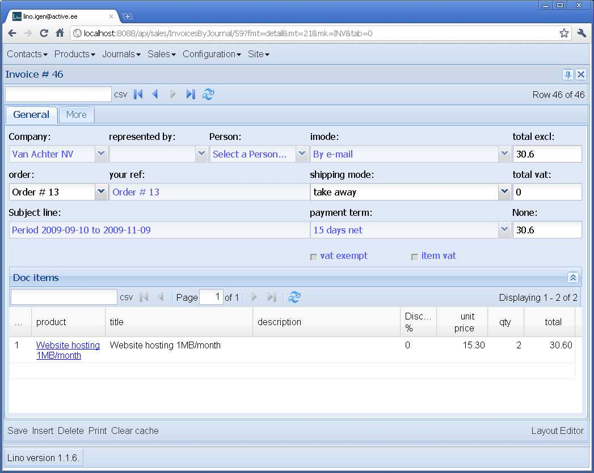
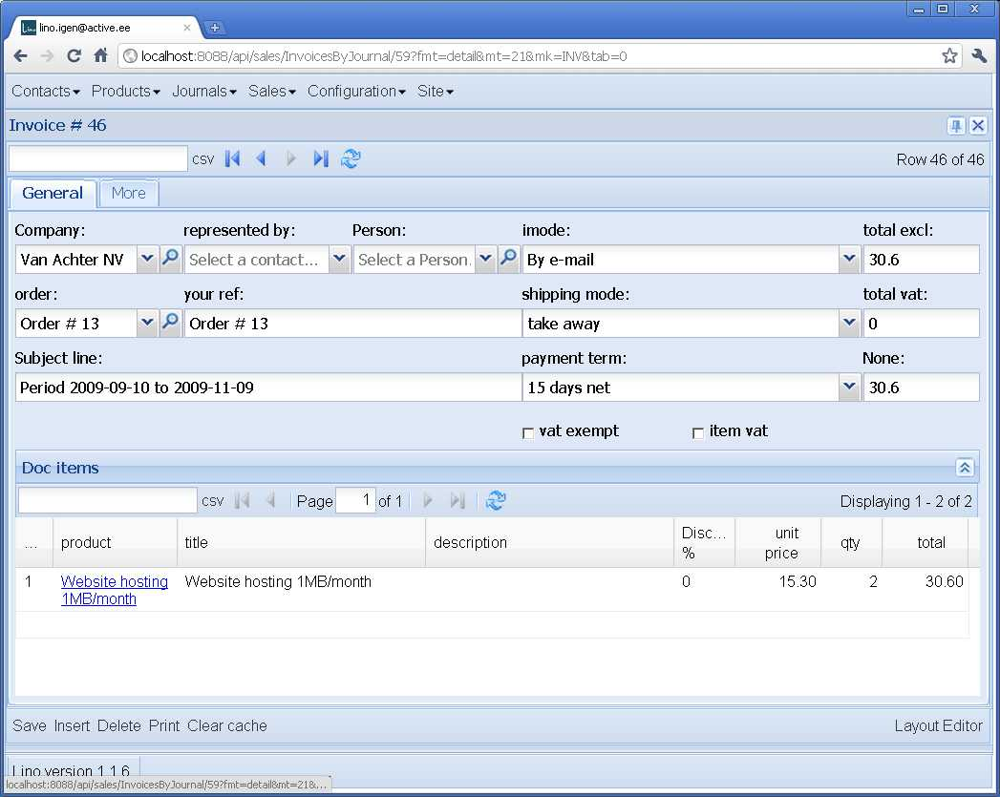

20110303¶
Vorbereitungen Demo in Pärnu¶
6.20 Uhr. Cool: Babel-Felder werden jetzt automatisch expandiert. Also (zumindest deswegen) sind keine lokalen .dtl-Dateien mehr nötig.
8 Uhr. Release /releases/2011/0303 and Upgrade in Pärnu.
Upgrade nach 1.1.6 in Eupen¶
10 Uhr. Ich nutze den Altweiberdonnerstag aus, um auch in Eupen den Lino auf 1.1.6 zu heben.
Abgesehen von den erwarteten Anpassungen im .dpy-Dump hatte ich auch folgende Überraschung:
Problem installing fixture '/usr/local/django/dsbe_eupen/fixtures/d20110303u.dpy': Traceback (most recent call last):
File "/var/snapshots/django/django/core/management/commands/loaddata.py", line 174, in handle
obj.save(using=using)
File "/var/snapshots/lino/lino/utils/dpy.py", line 246, in save
if not self.try_save(obj,*args,**kw):
File "/var/snapshots/lino/lino/utils/dpy.py", line 292, in try_save
dblogger.debug("Deferred %s : %s",obj2str(obj),e)
File "/var/snapshots/lino/lino/tools.py", line 95, in obj2str
return u"%s #%s (%s)" % (i.__class__.__name__,i.pk,i)
File "/var/snapshots/lino/lino/modlib/properties/models.py", line 246, in __unicode__
self.group,self.property,
File "/var/snapshots/django/django/db/models/fields/related.py", line 304, in __get__
rel_obj = QuerySet(self.field.rel.to).using(db).get(**params)
File "/var/snapshots/django/django/db/models/query.py", line 349, in get
% self.model._meta.object_name)
DoesNotExist: PropGroup matching query does not exist.
Also lino.tools.obj2str ist jetzt ein bisschen narrensicherer.
Und hier noch eine Überraschung. Wenn beim loaddata irgendwas nicht klappt, dann macht initdb ja eine Warnung im Stil:
WARNING Abandoning with 49 unsaved instances.
Problem installing fixture '/usr/local/django/dsbe_eupen/fixtures/d20110303u.dpy': Traceback (most recent call last):
File "/var/snapshots/django/django/core/management/commands/loaddata.py", line 174, in handle
obj.save(using=using)
File "/var/snapshots/lino/lino/utils/dpy.py", line 260, in save
raise Exception("Abandoned with %d unsaved instances. See dblog for details." % len(save_later))
Exception: Abandoned with 49 unsaved instances. See dblog for details.
Also man muss die system.log konsultieren um zu sehen,
welches denn diese 49 Records waren.
Dumm ist dann nur, wenn in der lokalen LOGGING
etwas anderes als level='DEBUG' stand.
Dann sieht man nämlich die Debug-Meldungen nicht.
Zunächst habe ich daraufhin über eine halbe Stunde gewurstelt, damit initdb folgenden Test macht, um mich vor meiner eigenen Dummheit zu schützen:
if not dblogger.logger.isEnabledFor(logging.DEBUG):
raise CommandError("System logger must be enabled for DEBUG")
Man kann dort nicht einfach nur auf dblogger.logger.level schauen,
weil die praktisch immer 0 (UNSET) ist. Und es hat auch keinen Zweck,
mit dblogger.logger.setLevel den level dort zu heben, weil ja schon
der root logger die Meldungen rausfängt.
Danach fiel mir noch ein, dass es eigentlich logischer ist,
außerdem in lino.utils.dpy.FakeDeserializedObject die
“Deferred”-Meldungen mit info statt debug zu machen.
Und den Test in initdb entschärfe ich dann: er braucht
nicht auf DEBUG zu stehen, wohl aber auf INFO.
Hier ist nun auch der Schuldige:
201103-03 10:51:13 DEBUG dpy : Deferred PropType #1 (Bewertung) :
{'choicelist': [u"Value u'HowWellDoYouKnow' is not a valid choice."]}
Logisch, da waren also noch ein paar Details in der .dpy-Datei zu beachten:
def create_properties_proptype(id,name,choicelist,limit_to_choices,multiple_choices,name_fr):
if name_fr is None: name_fr = ''
if choicelist == 'HowWellDoYouKnow':
choicelist = 'HowWell'
return PropType(id=id,name=name,choicelist=choicelist,limit_to_choices=limit_to_choices,multiple_choices=
(Wenn irgendwann mal mehr Linos in der Welt rumlaufen, muss ich solche Upgrades natürlich automatisiseren: docs/tickets/28.
Das Resultat ist jetzt richtig schön. Weil die Deferred-Meldungen nun INFO sind, werden sie live am Bildschirm angezeigt:
INFO Deferred PersonProperty #1 (Fachkompetenzen.Führerschein=Klasse B) : {'person': [u'Model person with pk 200007 does not exist.']}
INFO Deferred PersonProperty #2 (Hindernisse.Motivationsmangel=) : {'person': [u'Model person with pk 200007 does not exist.']}
INFO Deferred PersonProperty #3 (Fachkompetenzen.Clark-Führerschein=) : {'person': [u'Model person with pk 22406 does not exist.']}
INFO Deferred PersonProperty #4 (Fachkompetenzen.Führerschein=Klasse B) : {'person': [u'Model person with pk 22406 does not exist.']}
INFO Deferred PersonProperty #5 (Hindernisse.Juristische Probleme=) : {'person': [u'Model person with pk 22406 does not exist.']}
INFO Deferred PersonProperty #6 (Hindernisse.Gesundheitliche Einschränkung=) : {'person': [u'Model person with pk 22315 does not exist.']}
INFO Deferred PersonProperty #8 (Sozialkompetenzen.Führungsfähigkeit=gut) : {'person': [u'Model person with pk 200007 does not exist.']}
INFO Deferred PersonProperty #9 (Fachkompetenzen.Clark-Führerschein=) : {'person': [u'Model person with pk 200007 does not exist.']}
INFO Deferred PersonProperty #10 (Fachkompetenzen.Verkäufer=) : {'person': [u'Model person with pk 200007 does not exist.']}
INFO Deferred PersonProperty #11 (Hindernisse.Suchtprobleme=) : {'person': [u'Model person with pk 200007 does not exist.']}
INFO Deferred PersonProperty #12 (Hindernisse.Geistige Einschränkung=) : {'person': [u'Model person with pk 200007 does not exist.']}
INFO Deferred PersonProperty #13 (Fachkompetenzen.Führerschein=) : {'person': [u'Model person with pk 22315 does not exist.']}
INFO Deferred Unprintable Contact(pk=1,error=Person matching query does not exist. : {'person': [u'Model person with pk 200001 does not exist.']}
INFO Deferred Unprintable Contact(pk=3,error=Person matching query does not exist. : {'person': [u'Model person with pk 22314 does not exist.']}
INFO Deferred Unprintable Contact(pk=4,error=Person matching query does not exist. : {'person': [u'Model person with pk 200005 does not exist.']}
INFO Deferred Unprintable Contact(pk=5,error=Person matching query does not exist. : {'person': [u'Model person with pk 200006 does not exist.']}
Und diese Meldungen hier sind ja normal. Sie kommen daher, dass diese Records erst in der zweiten Runde gespeichert werden können.
Unsterblicher Dämon ?¶
Noch eine Überraschung, nachdem die Daten zurückgeladen sind: watch_tim lässt sich nicht stoppen.
ps aux | grep watch_tim meldet:
root 3042 0.0 2.4 87216 25200 ? S Feb18 0:27 python /usr/local/django/dsbe_eupen/manage.py watch_tim
Hatte ich etwa vergessen, ihn zu stoppen? Nochmal:
lsaffre@lino:/usr/local/django/dsbe_eupen$ ./stop
Stopped process in pidfile '/usr/local/django/dsbe_eupen/watch_tim/pid' (pid 3042).
Done.
Stopping web server: apache2.
Aber ps aux | grep watch_tim meldet anschließend noch immer genau das Gleiche.
Auch /etc/init.d/apache2 stop meldet keinen Fehler, wenn der Server gar nicht lief. Oder noch genauer: das Folgende kann ich so lange spielen wie ich will:
$ sudo /etc/init.d/apache2 stop && echo $?
Stopping web server: apache2.
0
$ sudo /etc/init.d/apache2 stop && echo $?
Stopping web server: apache2.
0
$ sudo /etc/init.d/apache2 stop && echo $?
Stopping web server: apache2.
0
Das verstehe ich nicht...
Jetzt sehe ich wohl, dass watch_tim
noch nicht angepasst worden war an die Änderung vom 0214
(lino.utils.dblogger jetzt nur noch ein Wrapper
zur system.log).
Aber ich sehe auf Anhieb nicht, was das damit zu tun haben
sollte.
Aha, hier ist was: der Auslöser scheint mal wieder das Mount zum Novell-Dateiserver zu sein. Auch das Folgende funktioniert nicht:
$ ls -l /mnt/oeshz_home_server
ls: reading directory /mnt/oeshz_home_server: Input/output error
total 0
Mit anderen Worten: reboot und bis auf weiteres ad acta damit. Alaaf!
(Check-in-Serie “20110303c”)
TwinTriggerField for ForeignKeys¶
Cool: ForeignKeys, die auf ein Modell verweisen, das ein Detail hat, haben jetzt einen weiteren Trigger-Button: der erste ist der normale Button zum Öffnen der Auswahlliste, und daneben ist ein Button (der mit der Lupe), mit dem man direkt ins Detail des ausgewählten Records springen kann.
Vorher:
{kind=link}
Nachher:
{kind=link}
Dank eines Tipps von Animal aus dem Jahre 2007
im ExtJS-Forum
war der erste Schritt ein Kinderspiel.
Lino.TwinCombo ist eine Kombination von ComboBox und TwinTriggerField.
Anschließend kamen noch zwei Lino-spezifische Subtilitäten hinzu.
Zum Beispiel haben die Felder imode, shipping_mode und payment_term
im obigen Beispiel keinen solchen Zusatzknopf (obwohl das auch ForeignKeys
sind), weil diese Modelle
(ShippingMode, InvoicingMode und PayementTerm)
kein Detail-Fenster definiert haben.
(Siehe Änderungen im Check-in 20110303d, Dateien lino/ui/extjs/ext_elems.py und linouiextjslinolib.js)